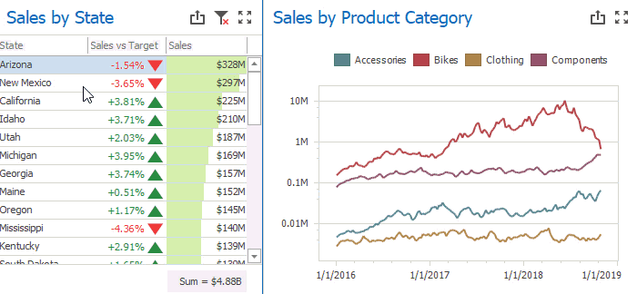

Master Filtering
The Dashboard allows you to use any data aware dashboard item as a filter for other dashboard items (Master Filter). You can select elements in a Master Filter item (grid records, chart bars, pie segments, etc.) to filter data in other dashboard items by the selected values.

Master Filtering Overview
Dashboard items can be divided into four groups by their master filtering capabilities.
Data visualization dashboard items allow you to enable master filtering by specifying the selection mode. The following dashboard items allow you to manage their master filtering mode.
To learn how to manage master filtering for these items, see Master Filter Settings.
Filter elements represent a special type of dashboard item whose main purpose is to apply filtering to other dashboard items. This capability is always enabled for these dashboard items.
The following filter elements are available.
- Combo Box
- List Box
- Tree View
Instead of switching between standard master filtering modes, some filter elements allow you to switch their type. This allows you to select a single value or multiple values.
To learn more, see the Filter Elements section.
Range Filter is a special type of dashboard item that displays a chart with selection thumbs and allows you to filter out values displayed along the argument axis.
To learn more, see the Range Filter section.
Dashboard item group allows you to manage interaction between dashboard items in and out of the group.
To learn more about the interactivity capabilities of the dashboard item group, see the Interactivity paragraph in the Dashboard Item Group topic.
Master Filter Settings
Master Filtering Modes
The Master Filter item supports two selection modes.
- Multiple - Allows you to select multiple elements in the Master Filter item.
- Single - Allows you to select only one element in the Master Filter item. When this mode is enabled, the default selection will be set to a Master Filter element. You can change this selection, but cannot clear it.
To enable/disable master filtering, use the Multiple Master Filter or Single Master Filter buttons in the Data Ribbon tab.

Note
If the selected dashboard item contains several types of elements that can be used for filtering, the Ribbon or Toolbar will provide the appropriate buttons to switch between these types (e.g., the Arguments and Series buttons in the Chart). For details, refer to the documentation for individual dashboard items in the Dashboard Item Settings section.
Filtering Across Data Sources
When different items in a dashboard are bound to different data sources, you can specify that a particular Master Filter should be applied across data sources. This means that it will apply filtering to fields with matching names in all data sources.
Fields are matched by their full names. For fields in other data sources to be affected by Master Filtering, their names must match the name of the field in the current data source, and they must belong to the same hierarchy level so that their full names also match. For instance, Customer.City and Customer.Address.City will not be treated as matching fields.
To enable filtering across data sources, use the Cross-Data-Source Filtering button in the Data Ribbon tab.

Preventing Items from Being Filtered
You can prevent specific dashboard items from being affected by Master Filters. To do this, use the Ignore Master Filters button in the Data Ribbon tab.

Apply Filtering
To learn how to apply filtering in a specific dashboard item, refer to the Master Filtering topic in the Interactivity section for this item.